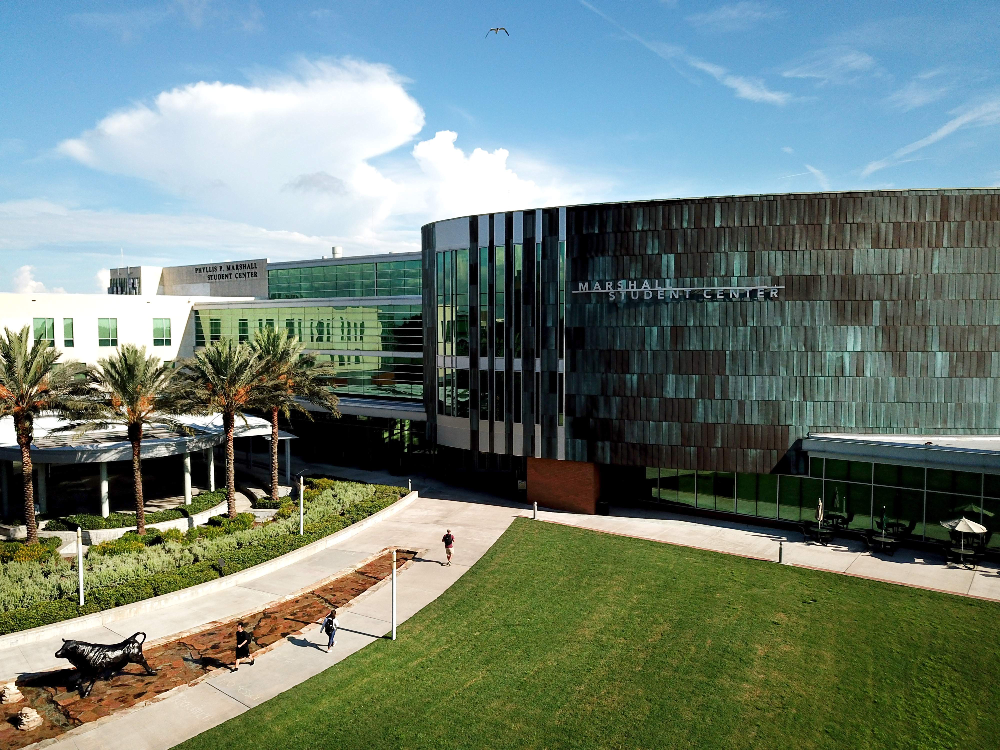

Siamo entusiasti di presentarvi la nostra formula Community College, un'alternativa più economica rispetto all'università e efficace per ottenere un diploma di livello bac +2 in soli due anni, immergendosi contemporaneamente in un'esperienza universitaria americana. Pur essendo meno noti, i Community College offrono corsi equivalenti a quelli delle università tradizionali e sono accessibili subito dopo aver ottenuto il diploma di maturità.
Dopo aver conseguito il diploma al Community College, avrete la possibilità di trasferire i vostri crediti presso un'università per ottenere un Bachelor o iniziare a lavorare nel settore correlato ai vostri studi. Questa opzione offre prospettive future interessanti per gli studenti attenti al loro budget e in cerca di una formazione di qualità negli Stati Uniti. Da Authentic Student, siamo lieti di offrire questa formula innovativa ai nostri studenti per fornire loro nuove opportunità di successo accademico e professionale.
I nostri Community College sono presenti in molti Stati degli Stati Uniti, tra cui:
California, Florida, Alabama, Illinois, Louisiana, New Jersey, Kansas, Texas, South Carolina, e molte altri. Ogni Community College è unico a causa della sua posizione, del suo programma accademico e delle sue opportunità di carriera.
Studiare in un Community College è un'opportunità per gli studenti di esplorare una nuova città, scoprire una cultura e uno stile di vita diversi, ottenendo nel contempo un diploma di livello bac +2 americano.
Community College negli Stati Uniti offrono numerosi vantaggi:
I corsi offerti nei Community College sono identici a quelli svolti nel primo e secondo anno di Bachelor presso un'università americana. Ecco i diversi vantaggi e modalità:
Scegliendo il programma "Community College", verrai alloggiato direttamente nel campus dell'università. Sono disponibili diverse opzioni:
Si soddisfate tutti i requisiti di ammissione di seguito elencati, allora siete idonei al programma Community College!
Se non soddisfate al 100% tutti i criteri, non esitate a contattarci per trovare insieme opzioni o programmi adatti a voi.
Le tariffe includono:
Il totale delle tariffe non include: